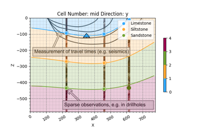

gempy.core.data.GeoModel¶
- class gempy.core.data.GeoModel(name: str, structural_frame: StructuralFrame, grid: Grid, interpolation_options: InterpolationOptions)[source]¶
Class representing a geological model.
Examples using
gempy.core.data.GeoModel¶Getting StartedMethods
__init__(name, structural_frame, grid, ...)add_surface_points(X, Y, Z, surface[, nugget])update_transform([auto_anisotropy, ...])Attributes
The geophysics input of the geological model.
input_data_descriptorOptional grid used for interpolation.
interpolation_input_copyinterpolation_optionsLegacy model (if available).
orientationsThis is a copy! Returns a OrientationsTable for all orientations across the structural elements
solutionssurface_pointsThis is a copy! Returns a SurfacePointsTable for all surface points across the structural elements
The transformation used in the geological model for input points.
Meta-information about the geological model, like its name, creation and modification dates, and owner.
The structural information of the geological model.
The general grid used in the geological model.
- geophysics_input: GeophysicsInput = None¶
The geophysics input of the geological model.
- interpolation_grid: EngineGrid = None¶
Optional grid used for interpolation. Can be seen as a cache field.
- legacy_model: gpl.Project = None¶
Legacy model (if available). Allows for backward compatibility.
- __init__(name: str, structural_frame: StructuralFrame, grid: Grid, interpolation_options: InterpolationOptions)[source]¶
- meta: GeoModelMeta¶
Meta-information about the geological model, like its name, creation and modification dates, and owner.
- structural_frame: StructuralFrame¶
The structural information of the geological model.
- transform: Transform = None¶
The transformation used in the geological model for input points.
- property surface_points_copy¶
This is a copy! Returns a SurfacePointsTable for all surface points across the structural elements
- property orientations_copy: OrientationsTable¶
This is a copy! Returns a OrientationsTable for all orientations across the structural elements